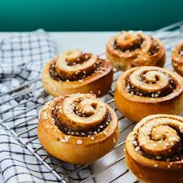
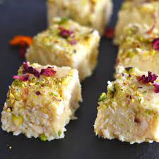

Cinnamon Roll
Ingredients
- ¾ cup warm milk
- 2 ¼ teaspoons yeast
- ¼ cup granulated sugar
- 1 egg plus 1 egg yolk
- ¼ cup butter
- 3 cups bread flour
- 2/3 cup dark brown sugar
- 1 ½ tablespoons ground cinnamon
- ¼ cup butter
Recipe
- Mix the milk with the yeast, sugar, eggs.
- Melt the butter and add to the mixture.
- Add in the flour and mix until combined into a dough.
- Knead the dough for 10 minuites.
- Transfer the dough into a large bowl and cover with plastic wrap. Leave it somewhere to rise for 2 hours.
- After the dough has doubled in size, roll it out into a large rectangle.
- Melt the butter for the filling and mix in the sugar and cinnamon.
- Spread the filling onto the dough then roll the dough into a swiss roll.
- Cut the roll into 3cm sections and place flat into a baking tray.
- Pre-heat the oven to 350F or 180C, then bake the rolls for 20-25min until lightly brown.


Barfi
Ingredients
- 300 ml condensed milk
- 2 1/2 cup milk powder
- 2 tablespoon ghee
- 1 cup water
- 1 teaspoon powdered green cardamom
- 1 handful pistachios
- 2/3 cup dark brown sugar
- silver vark as required
- 1 handful almonds
Recipe
- Make the milk powder dough
- Grate the dough & heat some ghee
- Cook the grated dough with cardamom
- Garnish with silver varq & almonds before serving
Gulab Jamun
Ingredients
- 1 cup dry milk powder
- 3 tablespoons all-purpose flour
- 2 tablespoons ghee (clarified butter), melted
- ½ teaspoon baking powder
- ½ cup warm milk
- 1 tablespoon chopped almonds (Optional)
- 1 tablespoon chopped pistachio nuts (Optional)
- 1 pinch ground cardamom
- 1 quart vegetable oil for deep frying
- 1 ¼ cups white sugar
- 7 fluid ounces water
- 1 teaspoon rose water
- 1 pinch ground cardamom
Recipe
- Prepare the sugar syrup
- Make the dough for Gulab Jamun
- Shape the dough in small balls
- Soak the fried balls in Gulab Jamun
- Garnish with dry fruits